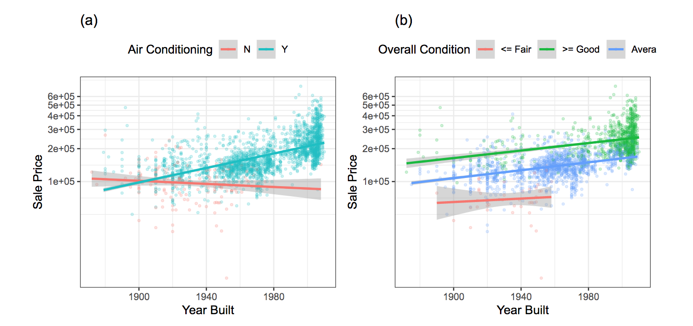

7.2 Four type of Interactions
- additive is when \(\beta_3 \approx{0}\)
- antagonistic is when \(\beta_3 < 0\)
- synergistic is when \(\beta_3 > 0\)
- atypical is when \(\beta_3 \neq 0\)
The main difference is that in the atypical interaction one of the two predictors doesn’t affect the response.

see full code in the scripts folder: 1_geom_contour.R
library(tidyverse)
# simulated data
set.seed(123)
beta0<- rep(0,200)
beta1<- rep(1,200)
beta2<- rep(1,200)
x1<- runif(200,min = 0, max = 1)
x2 <- runif(200,min = 0, max = 1)
e <- rnorm(200)##################################################
# synergism
beta3<- rep(10,200) # c(-10,0,10) # antagonism, no interaction, or synergism
y = beta0 + beta1*x1 + beta2*x2 + beta3*(x1*x2) + e
observed<- tibble(y,x1,x2)
mod <- lm(y~x1*x2,observed)
observed$z <- predict(mod,observed)
grid <- with(observed, interp::interp(x=x1,y=x2,z))
griddf <- subset(data.frame(x = rep(grid$x, nrow(grid$z)),
y = rep(grid$y, each = ncol(grid$z)),
z = as.numeric(grid$z)),!is.na(z))
p1 <- ggplot(griddf, aes(x, y, z = z)) +
geom_contour(aes(colour = after_stat(level)),size=2) +
#geom_point(data = observed,aes(x1,x2)) +
scale_color_viridis_c()+
labs(title="Synergistic",color="Prediction",x="x1",y="x2")+
theme_bw()+ theme(legend.position = "top")
##################################################
# no interaction
beta3 <- rep(0,200) # c(10,0,10) # antagonism, no interaction, or synergism
y = beta0 + beta1*x1 + beta2*x2 + beta3*(x1*x2) + e
observed<- tibble(y,x1,x2)
mod <- lm(y~x1*x2,observed)
observed$z <- predict(mod,observed)
grid <- with(observed, interp::interp(x=x1,y=x2,z))
griddf <- subset(data.frame(x = rep(grid$x, nrow(grid$z)),
y = rep(grid$y, each = ncol(grid$z)),
z = as.numeric(grid$z)),!is.na(z))
p2 <- ggplot(griddf, aes(x, y, z = z)) +
geom_contour(aes(colour = after_stat(level)),size=2) +
# geom_point(data = observed,aes(x1,x2)) +
scale_color_viridis_c()+
labs(title="Additive",color="Prediction",x="x1",y="x2")+
theme_bw()+ theme(legend.position = "top")
##################################################
# antagonism
beta3<- rep(-10,200) # c(-10,0,10) # antagonism, no interaction, or synergism
y = beta0 + beta1*x1 + beta2*x2 + beta3*(x1*x2) + e
observed<- tibble(y,x1,x2)
mod <- lm(y~ x1 * x2 , data = observed) # rnd effects (1 + x1 | x2)
observed$z <- predict(mod,observed)
grid <- with(observed, interp::interp(x=x1,y=x2,z))
griddf <- subset(data.frame(x = rep(grid$x, nrow(grid$z)),
y = rep(grid$y, each = ncol(grid$z)),
z = as.numeric(grid$z)),!is.na(z))
p3 <- ggplot(griddf, aes(x, y, z = z)) +
geom_contour(aes(colour = after_stat(level)),size=2) +
# geom_point(data = observed,aes(x1,x2)) +
scale_color_viridis_c()+
labs(title="Antagonistic",color="Prediction",x="x1",y="x2")+
theme_bw()+ theme(legend.position = "top")Visualizing interaction effects for the Ames data: 
see full code in the scripts folder: 2_manipulate.R
The general model function for interaction effects:
\[y=\beta_0+\beta_1x_1+\beta_2x_2+\beta_3x_1x_2+\text{error}\]
Which predictors interact?
interaction can be uncovered by more complex modeling techniques
- tree-based models
- random forests
- boosted tree model
- search techniques and svm
Feature engineering helps improving the effectiveness of a models by featuring selection of predictors, so as a consequence simplify the detection of interaction effects.
7.2.1 Building the base-model for Ames data
Here are the predictors divided by type, we will be looking at different ways to make a selection of the predictors and what are the best interactions for this data, which will be influencing model preformance.
library(AmesHousing)
ames <- make_ames() %>%
janitor::clean_names()
ames1 <-
ames %>% # names%>%sort
select(# continuous
gr_liv_area,lot_area,
lot_frontage,year_built,
year_sold,pool_area,longitude,
latitude,full_bath,
# qualitative
neighborhood,bldg_type,
central_air,ms_sub_class,
foundation,roof_style,alley,
garage_type,land_contour)